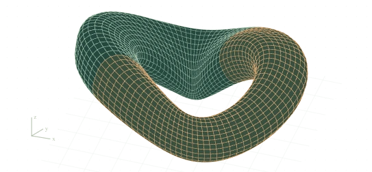
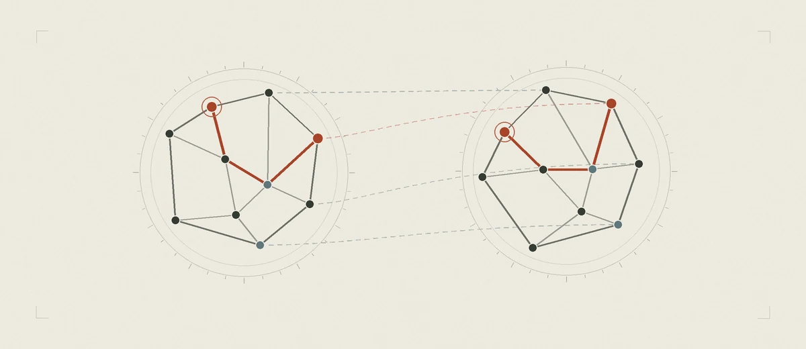

Algorithm Engineer at DeepGlint
Yongle Zhao赵永乐
I study post-training and visual representations at DeepGlint, with a focus on label-free reinforcement learning, training data quality, and model compatibility.

Selected papers
2026
Representation rigidity in face embeddings
Align two encoders with paired images so an upgraded model can search a gallery built by its predecessor.

Calibrating label-free reinforcement learning
CCAE combines confidence in a reasoning trajectory with agreement across answers to decide which responses to reinforce.

The intrinsic quality of face datasets
Combine label agreement and effective rank to distinguish useful data diversity from the spread caused by label noise.
Collaborative work

About me
My research began in face recognition and visual representations. I now also study how language models learn from their own generations and how to adapt vision-language models to specific tasks.
Read my CV (PDF) ↗- 2019 — present
DeepGlint
Algorithm Engineer · Post-training and visual representation
- 2017 — 2019
OrionStar
Computer Vision Engineer · Human detection and attribute recognition
- 2014 — 2017
Huazhong University of Science and Technology
M.S. · Pattern Recognition and Intelligent Systems
- 2010 — 2014
Hohai University
B.S. · Automation